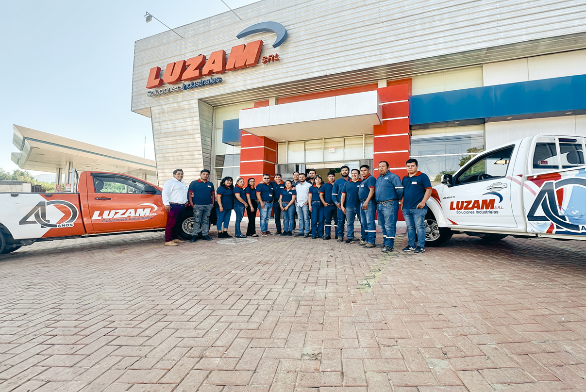

Descubre como LUZAM S.R.L. aporta al desarrollo del pais, siendo parte fundamental para el apoyo al agro y la industria tarijeña, expandiendose hacian el resto del pais.
LUZAM, una empresa familiar nace el 2 de enero de 1984, siendo en principio una empresa unipersonal dedicada a la comercialización de repuestos Volkswagen, bombas de agua y todos los requerimientos de la Agroindustria. En 1998, da un primer paso para convertirse en una importadora, ya que se consiguieron representaciones para la distribución de fábricas brasileñas, como: BAMBOZZI, SCHULZ, TRAPP, SOMAR. Con el tiempo, LUZAM fue creciendo en cuanto a la cantidad de proveedores internacionales a los que representaba, y a la variedad de productos que ofrecía para satisfacer de una mejor manera a toda su clientela, además de ampliar los servicios adicionales, como son: Taller propio, servicio post-venta, perforación de pozos profundos, instalaciones, mantenimiento y reparación de equipos a través de un grupo de ingenieros y técnicos, logrando así fidelizar a sus clientes actuales y captar clientes nuevos, es de esta forma que en el Año 2006 LUZAM se convierte en LUZAM S.R.L, inaugurando este año su primera sucursal en la ciudad de Sucre, en el departamento de Chuquisaca. En Agosto del año 2009, LUZAM S.R.L. inaugura su segunda sucursal en la ciudad de Bermejo, en el departamento de Tarija, finalmente en el año 2010 se inaugura una nueva sucursal en la ciudad de La Paz. En el año 2018 LUZAM S.R.L. con 35 años que avalan nuestra experiencia inaugura sus nuevas oficinas en la ciudad de Tarija constituyéndose en una de las más importantes proveedoras de soluciones industriales en el país.
Somos generadores de soluciones industriales forjando confianza a través de un equipo comprometido, creciendo juntos e impulsando el desarrollo del país.
Ser los mejores mediante un equipo sólido y protagonista en la oferta de nuestros productos y servicios a nivel nacional.
